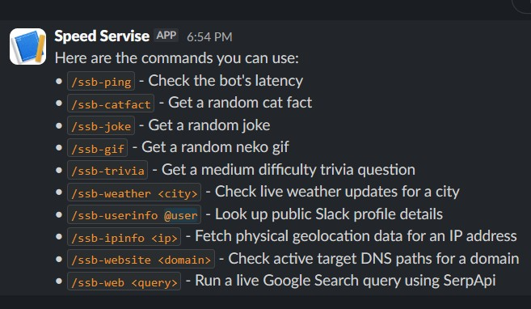

[Demo]
Stardance Slack Bot
A web demo of a playful StarDance Slack Bot
DEMO PREVIEW
Use /ssb-help to view available commands

Commands
/ssb-ping
Check the bot's latency
/ssb-catfact
Get a random cat fact
/ssb-joke
Get a random joke
/ssb-trivia
Get a medium difficulty trivia question
/ssb-gif
Get a random anime neko gif
/ssb-weather
Check live weather updates for a city
/ssb-userinfo
Look up public Slack profile details
/ssb-ipinfo
Fetch physical geolocation data for an IP address
/ssb-website
Check active target DNS paths for a domain
/ssb-web
Run a live Google Search query using SerpApi